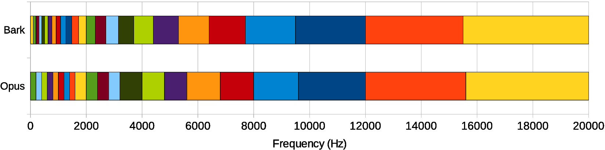

This is an in-progress demo. It's not secret (we don't do things in secret), but it's also not meant to be spread around yet. It still needs a lot more work, but it's world-viewable to make it easier for others to contribute, inspect, and critique.
—Jean-Marc
Noise suppression is a pretty old topic in speech processing, dating back to at least the 70s. As the name implies, the idea is to take a noisy signal and remove as much noise as possible while causing minimum distortion to the speech of interest.

From looking at the figure above, noise suppression looks simple enough: just three conceptually simple tasks and we're done, right? Right — and wrong! Any undergrad EE student can write a noise suppression algorithm that works... kinda... sometimes. The hard part is to make it work well, all the time, for all kinds of noise. That requires very careful tuning of every knob in the algorithm, many special cases for strange signals and lots of testing. There's always some weird signal that will cause problems and requires more tuning and it's very easy to break more things than you fix. It's 50% science, 50% art. I've been there before with the noise suppressor in the speexdsp library. It kinda works, but it's not great.
Deep learning is the new version of an old idea: artificial neural networks. Although those have been around since the 60s, what's new in recent years is that:
Recurrent neural networks (RNN) are very important here because make it possible to model time sequences instead of just considering input and output frames independently. This is especially important for noise suppression because we need time to get a good estimate of the noise. For a long time, RNNs were heavily limited in their ability because they could not hold information for a long period of time and because the gradient descent process involved when back-propagating through time was very inefficient (the vanishing gradient problem). Both problems were solved by the invention of gated units, such as the Long Short-Term Memory (LSTM), the Gated Recurrent Unit (GRU), and their many variants.
RNNoise uses the Gated Recurrent Unit (GRU) because it performs slightly better than LSTM on this task and requires fewer resources (both CPU and memory for weights). Compared to plain recurrent units, GRUs have two extra gates. The reset gate controls whether the state (memory) is used in computing the new state, whereas the update gate controls how much the state will changed based on the new input. This update gate (when off) makes it possible (and easy) for the GRU to remember information for a long period of time and is the reason GRUs (and LSTMs) perform much better than simple recurrent units.

Thanks to the successes of deep learning, it is now popular to throw deep neural networks at an entire problem. These approaches are called end-to-end — it's neurons all the way down. End-to-end approaches have been applied to speech recognition and to speech synthesis One the one hand, these end-to-end systems have proven just how powerful deep neural networks can be. On the other end, these systems can sometimes be both suboptimal, and wasteful in terms of resources. For example, some approaches to noise suppression use layers with thousands of neurons — and tens of millions of weights — to perform noise suppression. The drawback is now only the computational cost of running the network, but also the size of the model itself because your library is now a thousand lines of code along with tens of megabytes (if not more) worth of neuron weights.
That's why we went with a different approach here: keep all the basic signal processing that's needed anyway (not have a neural network attempt to emulate it), but let the neural network learn all the tricky parts that requires endless tweaking next to the signal processing. Another thing that's different from some existing work on noise suppression with deep learning is that we're targeting real-time communication rather than speech recognition, so we can't afford to look ahead more than a few milliseconds (in this case 10 ms).
To avoid having a very large number of outputs — and thus a large number of neurons — we decided against working directly with samples or with a spectrum. Instead, we consider frequency bands that follow the Bark scale, a frequency scale that matches how we perceive sounds. We use a total of 22 bands, instead of the 480 (complex) spectral values we would otherwise have to consider.
Of course, we cannot reconstruct audio from just the energy in 22 bands. What we can do though, is compute a gain to apply to the signal for each of these bands. You can think about it as using a 22-band equalizer and rapidly changing the level of each band so as to attenuate the noise, but let the signal through.
There are several advantages to operating with per-band gains. First, it makes for a much simpler model since there are fewer bands to compute. Second, in makes it impossible to create so-called musical noise artifacts, where only a single tone gets though while its neighbours are attenuated. These artifacts are common in noise suppression and quite annoying. With bands that are wide enough, we either let a whole band through, or we cut it all. The third advantage comes from how we optimize the model. Since the gains are always bounded between 0 and 1, simply using a sigmoid activation function (whose output is also between 0 and 1) to compute them ensures that we can never do something really stupid, like adding noise that wasn't there in the first place.
For the output, we could also have chosen a rectified linear activation function to represent an attenuation in dB between 0 and infinity. To better optimize the gain during training, the loss function is the mean squared error (MSE) applied to the gain raised to the power α. So far, we have found that α=0.5 produces the best results perceptually. Using α→0 would be equivalent to minimizing the log spectral distance, and is problematic because the optimal gain can be very close to zero.
The main drawback of the lower resolution we get from using bands is that we do not have a fine enough resolution to suppress the noise between pitch harmonics. Fortunately, it's not so important and there is even an easy trick to do it (see the pitch filtering part below).
Since the output we're computing is based on 22 bands, it makes little sense to have more frequency resolution on the input, so we use the same 22 bands to feed spectral information to the neural network. Because audio has a huge dynamic range, it's much better to compute the log of the energy rather than to feed the energy directly. And while we're at it, it never hurts to decorrelate the features using a DCT. The resulting data is a cepstrum based on the Bark scale, which is closely related to the Mel-Frequency Cepstral Coefficients (MFCC) that are very commonly used in speech recognition.
In addition to our cepstral coefficients, we also include:
That makes a total of 42 input features to the neural network.
The deep architecture we use is inspired from the traditional approach to noise suppression. Most of the work is done by 3 GRU layers. The figure below shows the layers we use to compute the band gains and how the architecture maps to the traditional steps in noise suppression. Of course, as is often the case with neural networks we have no actual proof that the network is using its layers as we intend, but the fact that the topology works better than others we tried makes it reasonable to think it is behaving as we designed it.

Even deep neural networks can be pretty dumb sometimes. They're very good at what they know about, but they can make pretty spectacular mistakes on inputs that are too far from what they know about. Even worse, they're really lazy students. If they can use any sort of loophole in the training process to avoid learning something hard, then they will. That is why the quality of the training data is critical.
A widely-circulated story is that a long time ago, some army researchers were trying to train a neural network to recognize tanks camouflaged in trees. They took pictures of trees with and without tanks, then trained a neural network to identify the ones that had a tank. The network succeeded beyond expectations! There was just one problem. Since the photos with tanks had been taken on cloudy days while the photos without tanks has been taken on sunny days, what the network really learned was how to tell a cloudy day from a sunny day. While researchers are now aware of the issue and avoid such obvious mistakes, more subtle versions of it can still occur (and have occurred to your truly in the past).
In the case of noise suppression, we can't just collect input/output data that can be used for supervised learning since we can rarely get both the clean speech and the noisy speech at the same time. Instead, we have to artificially create that data from separate recordings of clean speech and noise. The tricky part is getting a wide variety of noise data to add to the speech. We also have to make sure to cover all kinds of recording conditions. For example, an early version trained only on full-band audio (0-20 kHz) would fail when the audio was low-pass filtered at 8 kHz.
Unlike what is common for speech recognition, we choose not to apply cepstral mean normalization to our features and we retain the first cepstral coefficient that represents the energy. Because of that, we have to ensure that the data includes audio at all realistic levels. We also apply random filters to the audio to make the system robust to a variety of microphone frequency responses (which is normally handled by cepstral mean normalization).
Since the frequency resolution of our bands is too coarse to filter noise between pitch harmonics, we do it using basic signal processing. This is another part of the hybrid approach. When one has multiple measurements of the same variable, the easiest way to improve the accuracy (reduce noise) is simply to compute the average. Obviously, just computing the average of adjacent audio samples isn't what we want since it would result in low-pass filtering. However, when the signal is periodic (such as voiced speech), then we can compute the average of samples offset by the pitch period. This results in a comb filter that lets pitch harmonics through, while attenuating the frequencies between them — where the noise lies. To avoid distorting the signal, the comb filter is applied independently for each band and its filter strength depends both on the pitch correlation and on the band gain computed by the neural network.
We currently use an FIR filter for the pitch filtering, but it is also possible (and on the TODO list) to use an IIR filter, which would result in greater noise attenuation at the risk of higher distortion if the strength is too aggressive.
All the design and training of the neural network is done in Python using the awesome Keras deep learning library. Since Python is usually not the language of choice for real-time systems, we have to implement the run-time code in C. Fortunately, running a neural network is by far easier than training one, so all we had to do was implement feed-forward and GRU layers. To make it easier to fit the weights in a reasonable footprint, we constrain magnitude of the weights to +/- 0.5 during training, which makes it easy to store them using 8-bit values. The resulting model fits in just 85 kB (instead of the 340 kB required to store the weights as 32-bit floats).
The C code is available under the BSD-license. Although as of writing this demo, the code is not yet optimized, it already runs about 60x faster than real-time on an x86 CPU. We expect it should be possible to make it about 4x faster than it currently is.
OK, that's nice and all, but how does it actually sound?
Noise level (SNR)
Noise type
Suppression algorithm
Select where to start playing when selecting a new sample
Player will continue when changing sample.
WARNING: This doesn't do anything useful for now. Evaluating the effect of RNNoise compared to no suppression and to the Speexdsp noise suppressor.
Not happy with the samples above? You can actually record from your microphone and have your audio denoised in (near) real-time. If you click on the button below, RNNoise will perform noise suppression in Javascript from your browser.
If you think this work is useful, there's an easy way to help make it even better! All it takes is a minute of your time. Click on the "Record my noise" button below, don't say anything, and wait one minute while we collect noise coming from your mic. This noise can be used to improve the training of the neural network. As a side benefit, it means that the network will know what kind of noise you have and might do a better job when you get to use it for videoconferencing (e.g. in WebRTC).
—Jean-Marc Valin (jmvalin@jmvalin.ca) September XX, 2017